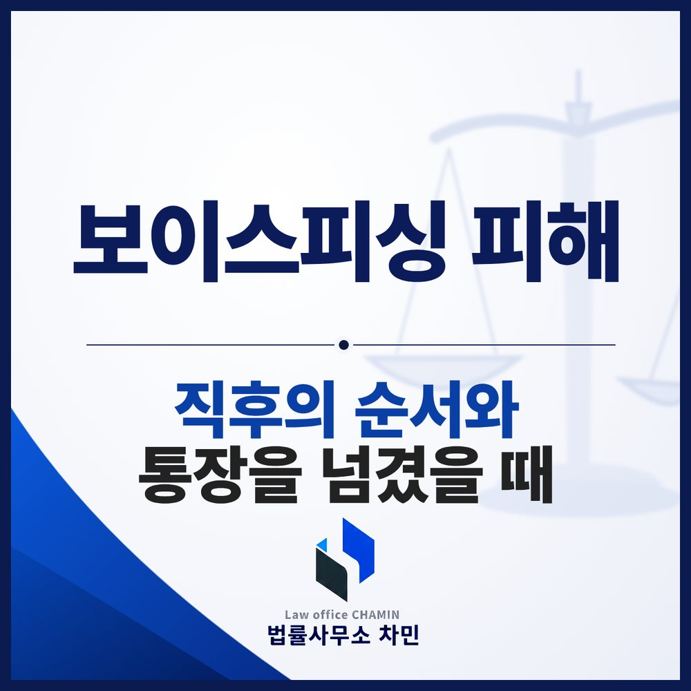

핵심 답변
보이스피싱 피해는 돈이 빠져나간 뒤 몇 시간 안의 대응이 환급 가능성을 가릅니다. 112와 송금한 금융회사에 지급정지를 먼저 요청하고, 그다음 휴대전화 정리와 명의도용 차단으로 추가 피해를 막는 순서로 움직여야 합니다.
보이스피싱은 대부분 ‘지금 바로’라는 압박으로 시작합니다. 수사기관이라며 구속을 말하거나, 가족이라며 급한 사정을 말하거나, 대출을 해 주겠다며 수수료를 요구합니다. 피해를 알아챈 순간부터는 순서를 지켜 빠르게 움직이는 것이 가장 중요합니다.

자주 쓰이는 수법
- 기관 사칭: 금융회사 직원이 먼저 개인정보를 확인하고, 이어서 금융감독원이나 수사기관을 사칭한 사람이 ‘불법 대출로 구속될 수 있다’며 돈을 넘기라고 하는 2인조 방식이 있습니다. 주말처럼 사실 확인이 어려운 때를 노리는 경우가 많습니다.
- 가족·지인 사칭: 메신저로 자녀나 지인을 사칭해 휴대전화가 고장 났다며 신분증 사진, 계좌 비밀번호, 송금을 요구합니다.
- 대출 빙자: 저금리 대환이나 신용등급 상향을 미끼로 보증금·수수료·기존 대출 상환금을 요구합니다.
- 파밍·스미싱: 택배·결제 알림·청첩장 문자 속 인터넷 주소를 누르면 악성앱이 설치되고, 정상 주소로 접속해도 가짜 금융 사이트로 연결되어 금융정보가 빠져나갑니다.
- 취업 빙자: 아르바이트에 합격했다며 ‘급여 관리’나 ‘출입증 발급’을 이유로 통장, 체크카드, 비밀번호를 받아 갑니다. 그 통장은 다른 피해자의 돈을 받는 계좌로 쓰입니다.
정부기관이나 금융회사는 전화나 문자로 돈을 보내라고 하거나 계좌 비밀번호를 묻지 않습니다. 의심스러운 연락은 일단 끊고, 대표번호나 가족에게 직접 다시 확인하는 것이 출발점입니다.
피해를 알아챘다면 — 먼저 할 일 세 가지
- 지급정지 요청: 112나 돈을 보낸 금융회사, 받은 계좌의 금융회사에 바로 전화해 지급정지를 요청합니다. 전기통신금융사기 피해 방지 및 피해금 환급에 관한 특별법에 따라 피해금이 들어간 계좌를 묶는 절차입니다. 이후 금융회사가 안내하는 기간 안에 피해구제 신청서와 사건사고사실확인원 등 서류를 내야 합니다.
- 휴대전화 정리: 원격제어앱이나 악성앱이 깔렸다면 통화와 문자가 가로채일 수 있으므로, 다른 전화로 신고를 마친 뒤 앱 삭제나 초기화를 합니다.
- 대화 기록 보존: 문자, 메신저 대화, 통화 목록, 송금 내역, 받은 ‘공문’이나 명함 사진을 지우지 말고 저장해 둡니다. 신고와 고소, 환급 절차에 모두 쓰입니다.
추가 피해를 막는 단계
- 개인정보 노출 등록: 금융감독원의 개인정보 노출자 사고예방 시스템에 등록하면 내 명의의 신규 계좌 개설이나 카드 발급이 제한됩니다.
- 계좌 일괄 지급정지: 계좌정보통합관리서비스에서 내 명의의 계좌를 한꺼번에 조회하고 지급정지할 수 있습니다.
- 휴대전화 명의도용 차단: 명의도용 방지 서비스에서 내 이름으로 개통된 휴대전화를 확인하고 신규 개통을 막습니다.
- 예방 서비스 미리 신청: 지연이체, 입금계좌 지정, 해외 IP 차단은 본인이 신청해야 적용됩니다. 한 번 피해를 입은 뒤에는 재발을 막기 위해 함께 신청해 두는 것이 좋습니다.
환급은 어떻게 되나
지급정지된 계좌에 피해금이 남아 있으면, 금융감독원이 채권소멸 절차를 거친 뒤 피해자에게 환급합니다. 다만 사기범이 이미 인출하거나 다른 계좌로 옮긴 돈은 묶이지 않으므로, 환급액은 지급정지 시점에 남아 있던 금액에 좌우됩니다. 남은 피해는 형사 고소와 함께 배상명령 신청이나 민사소송으로 청구할 수 있는데, 계좌 명의인이나 현금 수거책을 상대로 하는 민사 책임은 수거책의 민사 책임 칼럼에서 다뤘습니다.
구직 중 통장을 넘겼다면
취업 과정에서 통장, 체크카드, 비밀번호를 넘겼다면 피해자인 동시에 수사 대상이 될 수 있습니다. 접근매체를 양도하거나, 대가를 약속하고 대여하거나, 범죄에 이용될 것을 알면서 대여하는 것은 금지되고(전자금융거래법 제6조 제3항), 위반하면 5년 이하의 징역 또는 3천만 원 이하의 벌금에 처할 수 있습니다(같은 법 제49조 제4항). 사기에 쓰일 줄 알았는지가 쟁점이 되므로, 채용 공고, 담당자와의 대화, 통장을 넘긴 경위를 그대로 보존해 두어야 합니다. 내 계좌가 사기 계좌로 신고되면 지급정지와 전자금융거래 제한이 걸릴 수 있다는 점도 알아 두어야 합니다.
부여에서 보이스피싱 피해를 입었다면
부여군에서 생긴 사건은 부여경찰서가 수사하고, 송치되면 대전지방공소청 논산지청이 처분하며, 재판은 대전지방법원 논산지원에서 열립니다. 피해를 알아챈 즉시 112와 금융회사에 지급정지를 요청하고, 대화와 송금 기록을 보존한 뒤 부여보이스피싱변호사와 고소, 배상 청구, 통장 명의 문제를 함께 정리하세요.